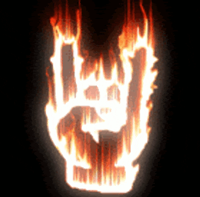
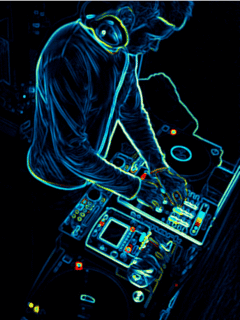
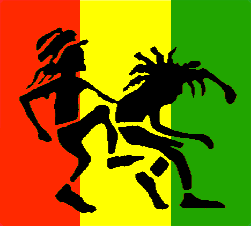

| Descripción del género | Recomendados | |
|---|---|---|
|  | Rock a un conjunto de géneros variados de música popular, descendientes más o menos del Rock n’ Roll original nacido en los Estados Unidos en la década de 1950, como fruto de una fusión entre la música Country y el Rhythm and Blues. El heavy metal o metal, es un género musical derivado primordialmente del rock y que incorpora elementos inspirados en el Blues rock, el Rock ácido y de la música clásica junto con el hard rock con el que comparte rasgos esenciales. |
|
|  | La música electrónica se define como aquella música creada usando instrumentos electrónicos tales como sintetizadores, ordenadores o sampleadores. Es por ello que el desarrollo de la música electrónica está intrínsecamente relacionado con los avances de software y la aparición de nuevos instrumentos musicales. |
|
| El rap es un estilo de música que se caracteriza por un recitado rítmico de las letras, que no se cantan. Surgido en Estados Unidos en la mitad del siglo XX, se trata de un estilo que suele ser asociado con la población estadounidense de raza negra aunque, en la actualidad, trasciende fronteras y culturas. |
|
 | El rap es un estilo de música que se caracteriza por un recitado rítmico de las letras, que no se cantan. Surgido en Estados Unidos en la mitad del siglo XX, se trata de un estilo que suele ser asociado con la población estadounidense de raza negra aunque, en la actualidad, trasciende fronteras y culturas. |
|